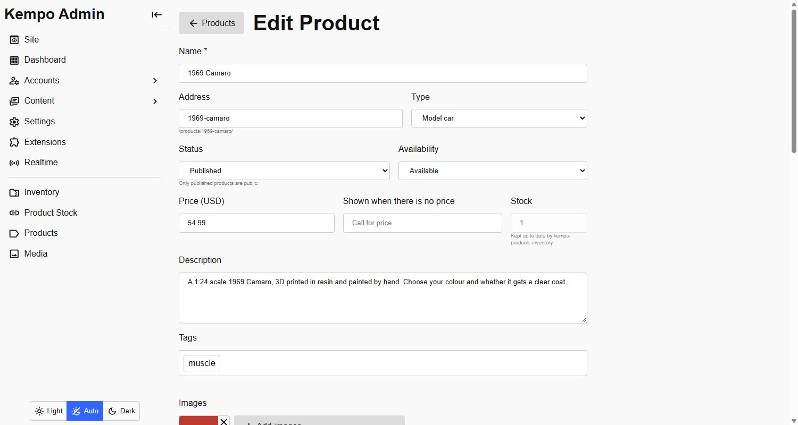
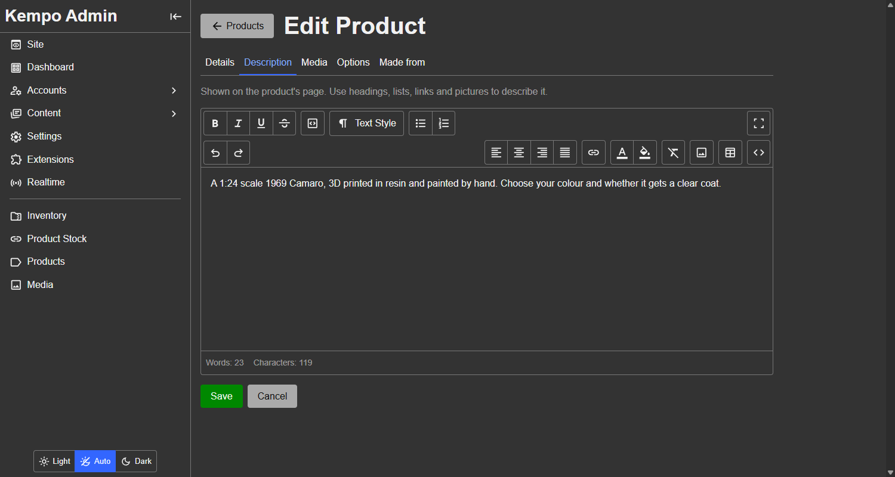
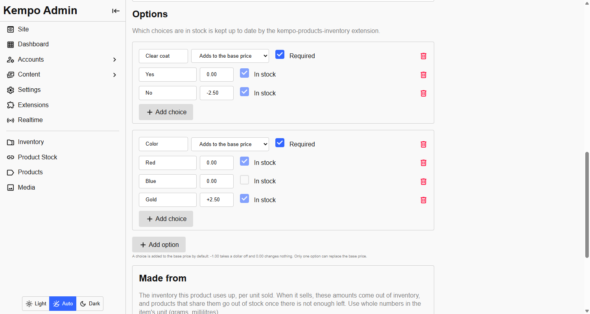
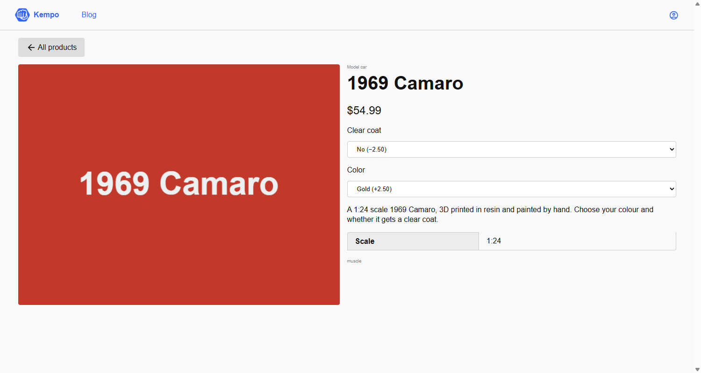

<page pageName="Your catalog" title="Your catalog - Kempo Products">
  <content>
    <p>Everything on this page is done in the admin, under <strong>Products</strong>, with no code.</p>

    <h2 id="templates" class="mt">Templates</h2>
    <p>Under <strong>Products &gt; Templates</strong> make a template, such as "Model car", with its own attributes (a "Scale"), options (a Color in black and white) and default values (every model car is the same size and weight). Pick it on a product's <strong>Template</strong> tab and the product inherits all of it. A product can still add attributes, options and extra choices of its own: the template offers black and white, this product adds red and blue. A template can also give its products a product type, a price, a description, tags and categories, which a product uses until it sets its own.</p>

    <h2 id="attributes" class="mt">Attributes</h2>
    <p>A product has only what every catalog needs: a name, a URL, a description, a status, a price, quantity, pictures and tags. Everything else is up to you.</p>
    <p>Under <strong>Products &gt; Attributes</strong> add the facts your products have: a "Scale" (a choice of 1:18 or 1:24), a "Year" (a number), a "Mileage". Every product shows them.</p>
    <div class="table-wrapper mb">
      <table>
        <thead><tr><th>Kind of attribute</th><th>Holds</th></tr></thead>
        <tbody>
          <tr><td>Short text, long text</td><td>Words. Short is up to 1,000 characters, long up to 20,000</td></tr>
          <tr><td>Number</td><td>Any number</td></tr>
          <tr><td>Yes / no</td><td>A switch</td></tr>
          <tr><td>Date</td><td>A date</td></tr>
          <tr><td>Colour</td><td>A colour, chosen with a picker</td></tr>
          <tr><td>Rating</td><td>One to five stars</td></tr>
          <tr><td>Choice list</td><td>One of a list you define</td></tr>
          <tr><td>Images and files</td><td>Only when <a href="https://github.com/dustinpoissant/kempo-media" target="_blank">kempo-media</a> is installed</td></tr>
        </tbody>
      </table>
    </div>
    <div class="mb">
      
      <small class="d-b tc-muted">Adding an attribute. This "Year" is a number that only model cars have.</small>
    </div>
    <p>Tick <strong>Visitors can filter by this</strong> on a choice-list attribute and it becomes a drop-down on the public list. An attribute can be changed to another kind only where nothing can be lost: a choice list can become text, and short text can become long text.</p>

    <h2 id="categories" class="mt">Categories</h2>
    <p>A product is of one type, which decides its attributes, and can be in <strong>any number of categories</strong>, which are how shoppers browse. Add them under <strong>Admin &rarr; Products &rarr; Product Categories</strong>, then tick them on a product's <strong>Details</strong> tab, when you create or edit it.</p>
    <p>A category has a name, a description and a <strong>key</strong> made from its name (<code>model-cars</code>). The key never changes, because it is in addresses like <code>/products/?category=model-cars</code>. Deleting a category takes it off its products and leaves them.</p>
    <p><code>/categories/</code> lists the categories that have published products in them, with how many, and each links to the product list narrowed to it. <code>&lt;k-products-list category="model-cars"&gt;</code> shows one anywhere on your site.</p>

    <h2 id="products" class="mt">Products</h2>
    <p>A product's <strong>status</strong> is <code>draft</code>, <code>published</code> or <code>archived</code>. Only published products are public. Its <strong>availability</strong> is <code>available</code>, <code>pending</code> or <code>sold</code>, for things like a dealership's "sale pending". Neither needs a count.</p>
    <p>A product's <strong>URL</strong> (its slug) is made from its name, and is the last part of its page: <code>/products/1969-camaro/</code>. You can change it. A few words are reserved because they are this extension's own addresses: <code>api</code>, <code>components</code>, <code>vendor</code>, <code>sdk</code>, <code>index</code>, <code>admin</code>, <code>new</code> and <code>edit</code>.</p>
    <div class="mb">
      
      <small class="d-b tc-muted">The product form is split into tabs. Here the quantity box is read-only, because another extension keeps it up to date.</small>
    </div>
    <p>The <strong>Description</strong> tab is the same full rich text editor pages use: headings, lists, links, tables and pictures. It is stored as HTML, and the public page sanitizes it when showing it, so scripts, event handlers and <code>javascript:</code> links never run. Search engines get its plain text as the meta description.</p>
    <div class="mb">
      
      <small class="d-b tc-muted">The Description tab.</small>
    </div>
    <p><strong>Tags</strong> are short labels such as <code>featured</code> or <code>sale</code>. They are searchable, and the <a href="./components.html">components</a> can show only the products with a tag, which is the simplest way to curate a home page.</p>

    <h2 id="price" class="mt">Price</h2>
    <p>A price is optional. A product with no price shows its <strong>price label</strong> instead, such as "Call for price". Turn off the <code>prices_visible</code> setting to run a catalog that never shows what things cost.</p>
    <p>Prices are stored as whole numbers of the smallest unit (<code>4999</code> is $49.99), so there is never a rounding error. The <a href="./reference.html#money">reference</a> covers currencies without cents.</p>

    <h2 id="quantity" class="mt">Quantity</h2>
    <p>Quantity is a number, or blank for <strong>unlimited</strong>, which is the default. A catalog that never counts anything never shows "out of stock". When a product is bought its quantity goes down, and at zero it shows as out of stock.</p>
    <p>If another extension keeps a product's quantity in step with something else (the <a href="./inventory.html">inventory connector</a> does), the quantity box is read-only and says who is maintaining it, so an edit cannot be silently overwritten.</p>

    <h2 id="options" class="mt">Options and prices</h2>
    <p>Options are the choices a buyer makes: colour, clear coat, size. Each choice carries a price, and <strong>by default that price is relative to the product's base price</strong>:</p>
    <div class="table-wrapper mb">
      <table>
        <thead><tr><th>Base price</th><th>Choice</th><th>Result</th></tr></thead>
        <tbody>
          <tr><td>$49.99</td><td>No clear coat, <code>-1.00</code></td><td>$48.99</td></tr>
          <tr><td>$49.99</td><td>Gold paint, <code>+2.50</code></td><td>$52.49</td></tr>
          <tr><td>$49.99</td><td>Red paint, <code>0.00</code></td><td>$49.99</td></tr>
        </tbody>
      </table>
    </div>
    <p>You set one base price and adjust from it, instead of typing a full price for every combination. Adjustments from several options add up, and a price never goes below zero.</p>
    <p>An option can instead be set to <strong>replace the base price</strong>, so each of its choices is a full price. That is how most shops price sizes. Only one option per product can do this, and adjustments from the others still apply on top.</p>
    <div class="mb">
      
      <small class="d-b tc-muted">The options editor. Prices are typed as an adjustment: <code>-2.50</code> takes two and a half off, and <code>+2.50</code> adds it. Untick "In stock" when a choice is sold out.</small>
    </div>
    <p>A choice can be marked sold out, and it is then shown as unavailable and cannot be bought.</p>

    <h3 class="mt">Choosing options is in the address</h3>
    <p>When a visitor chooses an option, it is written into the address: <code>/products/1969-camaro/?color=red&amp;clear-coat=no</code>. A refresh or a shared link brings the same choices back. The name is the option's key and the value is the choice's key. A choice that does not exist, or is sold out, is ignored.</p>
    <div class="mb">
      
      <small class="d-b tc-muted">A product page opened from <code>?color=gold&amp;clear-coat=no</code>: both choices are already selected, and the price is the server's: 54.99 minus 2.50 plus 2.50.</small>
    </div>
    <p>The price on the page is asked of the server every time the choices change, so it is always the number that would be charged. <strong>Never trust a price from a browser.</strong> Anything that charges money should ask for it with <code>getPrice</code>.</p>

    <h2 id="images" class="mt">Images</h2>
    <p>If <a href="https://github.com/dustinpoissant/kempo-media" target="_blank">kempo-media</a> is installed and enabled, the product form lets you upload pictures. The first is the primary one shown in lists. Without it the attribute is simply not shown, and pages show no picture.</p>
  </content>
</page>
